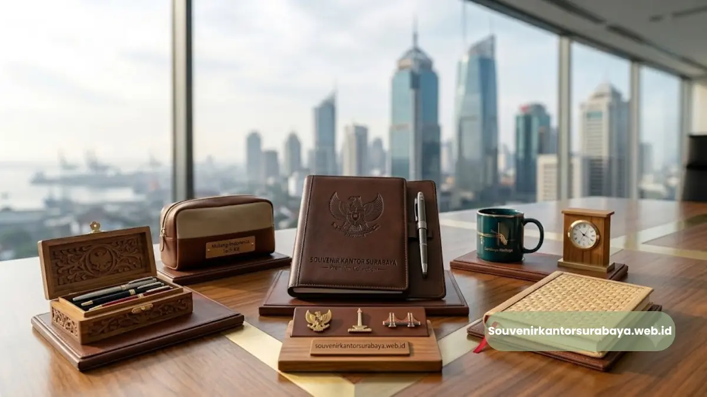

Buku agenda kulit asli eksekutif sebagai souvenir kantor premium di Surabaya.
- Apa Itu Buku Agenda Kulit Asli Eksekutif?
- Mengapa Bahan Kulit Asli Lebih Diminati untuk Souvenir Korporat?
- Untuk Kebutuhan Apa Saja Buku Agenda Kulit Cocok Digunakan?
- Apa Saja Faktor yang Menentukan Kualitas Buku Agenda Kulit?
- Bagaimana Cara Kustomisasi Agar Sesuai Identitas Perusahaan?
- Kesalahan Umum Saat Memilih Souvenir Kantor Berbahan Kulit
- Kesimpulan
Buku agenda kulit asli eksekutif Surabaya adalah souvenir kantor premium berbahan kulit asli yang dirancang untuk memperkuat citra profesional perusahaan.
Produk ini banyak dipilih sebagai hadiah klien, cendera mata rapat, atau apresiasi karyawan karena kesan mewah dan fungsinya yang tahan lama. Bagi perusahaan di Surabaya yang ingin tampil beda di mata mitra bisnis, buku agenda kulit asli menjadi jawaban paling relevan.
- Buku agenda kulit asli eksekutif adalah souvenir kantor berbahan premium yang mencerminkan profesionalisme perusahaan.
- Cocok digunakan sebagai hadiah klien, cendera mata seminar, atau apresiasi karyawan senior.
- Kulit asli memberi kesan tahan lama dan bernilai jual tinggi dibanding souvenir berbahan sintetis.
- Souvenir Kantor Surabaya menyediakan opsi kustomisasi nama, logo, dan desain sesuai identitas perusahaan.
- Pemesanan dapat disesuaikan dengan kebutuhan korporat, mulai dari acara internal hingga gala dinner.
Apa Itu Buku Agenda Kulit Asli Eksekutif?
Buku agenda kulit asli eksekutif adalah agenda atau planner harian dengan sampul dari bahan kulit asli, umumnya dilengkapi elemen finishing seperti jahitan tangan, emboss logo, dan penutup elastis atau kancing magnet.
Produk ini berbeda dari agenda biasa karena tekstur, daya tahan, dan tampilannya yang khas kelas eksekutif. Di lingkungan korporat, buku agenda semacam ini sering difungsikan sebagai media branding berjalan.
Setiap kali digunakan oleh klien atau mitra, logo perusahaan ikut terlihat, sehingga souvenir ini bekerja ganda: sebagai alat bantu produktivitas sekaligus sarana promosi halus.
Baca Juga
Mengapa Bahan Kulit Asli Lebih Diminati untuk Souvenir Korporat?
Kulit asli dipilih karena karakternya yang justru semakin menarik seiring waktu, berbeda dengan bahan sintetis yang cenderung cepat terlihat usang.
Tekstur alami kulit juga memberikan kesan mewah tanpa perlu ornamen berlebihan, sehingga cocok untuk audiens korporat yang mengutamakan kesan elegan namun tidak berlebihan. Selain nilai estetika, kulit asli umumnya lebih tahan terhadap gesekan harian dibanding bahan imitasi, sehingga souvenir tetap terlihat rapi meski dipakai dalam jangka panjang.
Faktor inilah yang membuat banyak perusahaan di Surabaya menjadikan buku agenda kulit asli sebagai pilihan utama untuk hadiah kelas atas.
Untuk Kebutuhan Apa Saja Buku Agenda Kulit Cocok Digunakan?
Buku agenda kulit asli eksekutif cocok digunakan pada berbagai momen bisnis, mulai dari penyambutan klien baru, cendera mata seminar dan workshop, hingga hadiah akhir tahun untuk mitra strategis. Fleksibilitas inilah yang membuatnya menjadi salah satu souvenir kantor paling sering dipesan ulang oleh perusahaan.
Beberapa skenario penggunaan yang umum antara lain:
- Hadiah perkenalan saat meeting bisnis pertama dengan calon klien.
- Cendera mata untuk pembicara atau peserta VIP dalam seminar korporat.
- Apresiasi tahunan bagi karyawan level manajerial ke atas.
- Merchandise eksklusif dalam acara peluncuran produk atau gala dinner perusahaan.

Buku agenda kulit asli dengan kustomisasi identitas perusahaan menambah kesan eksklusif.
Apa Saja Faktor yang Menentukan Kualitas Buku Agenda Kulit?
Kualitas buku agenda kulit eksekutif ditentukan oleh jenis kulit yang digunakan, kerapian jahitan, jenis kertas isi, serta detail finishing seperti emboss logo.
Semakin rapi kombinasi keempat faktor ini, semakin tinggi pula kesan premium yang dirasakan penerima souvenir. Perusahaan yang memesan dalam jumlah besar juga perlu memperhatikan konsistensi kualitas antar unit, karena souvenir korporat yang dibagikan ke banyak klien sekaligus harus memiliki standar finishing yang seragam agar citra perusahaan tetap terjaga.
Bagaimana Cara Kustomisasi Agar Sesuai Identitas Perusahaan?
Kustomisasi umumnya mencakup emboss atau cetak logo di sampul depan, pemilihan warna kulit yang selaras dengan identitas brand, hingga penambahan nama penerima untuk kesan personal.
Souvenir Kantor Surabaya membuka opsi kustomisasi semacam ini agar setiap buku agenda benar-benar mencerminkan karakter perusahaan pemesan, bukan sekadar produk generik.
Kesalahan Umum Saat Memilih Souvenir Kantor Berbahan Kulit
Kesalahan yang paling sering terjadi adalah memilih souvenir hanya berdasarkan harga termurah tanpa mempertimbangkan daya tahan bahan, sehingga kesan mewah yang diharapkan justru tidak tercapai.
Kesalahan lain adalah melewatkan proses kustomisasi logo, padahal elemen inilah yang membedakan souvenir korporat dari produk pasaran. Perencanaan waktu pemesanan yang terlalu mepet juga kerap menjadi kendala, terutama untuk pesanan dalam jumlah besar yang membutuhkan proses produksi dan kustomisasi.
Oleh karena itu, mengatur jadwal pemesanan lebih awal sangat disarankan agar hasil akhir tetap maksimal.
Kesimpulan
Buku agenda kulit asli eksekutif adalah pilihan tepat bagi perusahaan di Surabaya yang ingin menghadirkan souvenir kantor dengan kesan profesional, tahan lama, dan bernilai branding tinggi.
Dengan kustomisasi logo dan desain yang sesuai identitas perusahaan, souvenir ini mampu meninggalkan kesan mendalam bagi klien maupun karyawan.
Jika perusahaan Anda sedang mencari souvenir kantor eksekutif yang elegan dan siap dikustomisasi, souvenir kantor surabaya menyediakan pilihan buku agenda kulit asli dengan proses pemesanan yang mudah.
Hubungi tim kami sekarang untuk konsultasi kebutuhan souvenir korporat perusahaan Anda.

Hawa Nadira
Tim penulis CorporateGifts ID berfokus pada strategi souvenir kantor, merchandise korporat, dan inovasi brand untuk klien B2B.
Keahlian: Branding perusahaan, produksi souvenir, paket event, desain materi promosi.
Artikel Terkait

Panduan Memilih Seminar Kit Premium
Ringkasan panduan memilih seminar kit premium yang tepat untuk acara dan kebutuhan branding perusahaan.
Baca Selengkapnya
Merchandise Perusahaan untuk Promosi Bisnis
Ide merchandise korporat yang efektif untuk meningkatkan visibilitas brand dan impresi profesional.
Baca Selengkapnya
Ide Souvenir Kantor
Pilihan souvenir kantor dengan sentuhan branding yang membuat acara perusahaan semakin berkesan.
Baca Selengkapnya